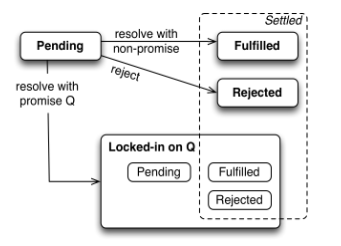

const q = p.then(onFulfilled, onRejected) // q is a new promise
所以我们可以继续查询q：
1 2 3 4
p .then(onFulfilled, onRejected) .then(value => {}) // resolved with what is returned by either onFulfilled or onRejected .catch(error =>{}) // rejected if either onFulfilled or onRejected throw an exception
使用普通值来resolve q
1 2 3 4 5 6 7
p .then(function (value1) { return123; // q is a promise resolved with 123 }) .then(function (value2) { console.log(value2); // 123 });
使用另一个promise来resolve q
1 2 3 4 5 6 7
p .then(function (value1) { return r; // r is a promise, q = r }) .then(function (value2) { console.log(value2); });
resolve promise with normal value or another promise状态示意图：

resolve q from onRejected
从onRejected中返回的值一样可以用来resolve(不是reject) q：
1 2 3 4 5 6 7 8
p .catch(function () { // Something went wrong, use a default value return'Untitled.txt'; }) .then(function (fileName) { ··· });
通过抛出异常来reject q(这个时候没有reject方法可以调用)
1 2 3 4 5 6 7
p .then(function (value) { thrownewError(); }) .catch(function (reason) { // Handle error here });
Promise.prototype.finally = function (callback) { const P = this.constructor; // We don’t invoke the callback in here, // because we want then() to handle its exceptions returnthis.then( // Callback fulfills => continue with receiver’s fulfillment or rejection // Callback rejects => pass on that rejection (then() has no 2nd parameter!) value => P.resolve(callback()).then(() => value), reason => P.resolve(callback()).then(() => { throw reason }) ); };